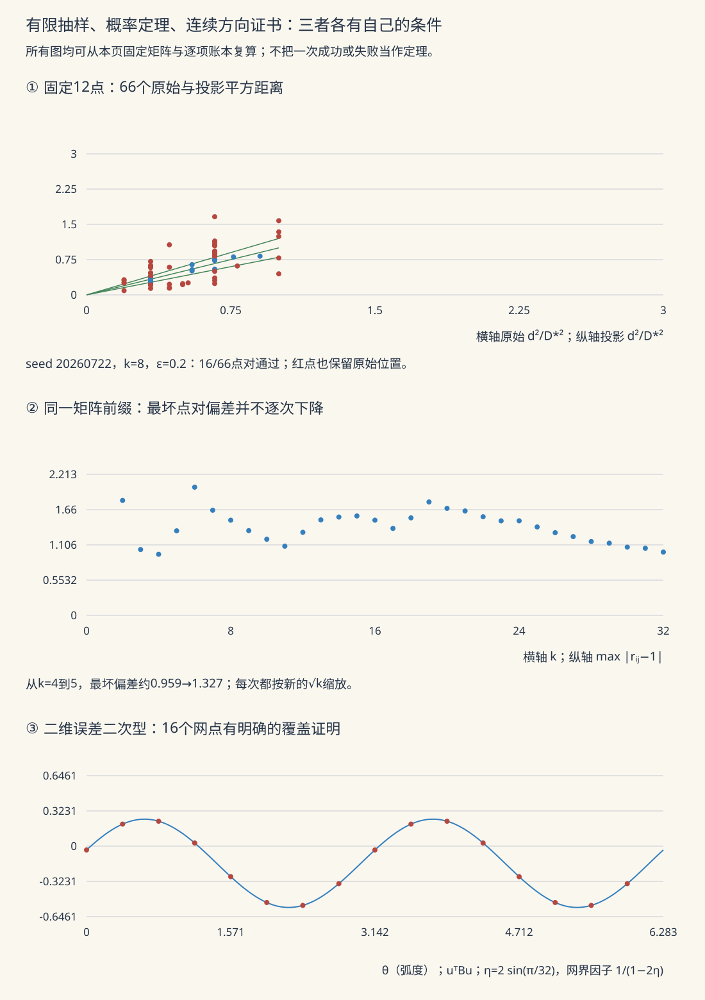

高维概率 II · 随机向量与 Johnson–Lindenstrauss 降维
对标：Vershynin HDP §3.1–3.4、§5.3 ｜ 前置：hdp-01、本科高代 VI/统计 V 本页把集中不等式对准两个统计与 ML 的核心问题：协方差矩阵要多少样本才估得准（答案：维数的常数倍——但要到下一页随机矩阵工具才证完，本页立框架）与降维能压到多低而不毁几何（Johnson–Lindenstrauss：\(O(\ln N)\) 维，与原维数无关——全证）。
1. 高维随机向量的语言

各向同性：\(E X = 0,\ E XX^\top = I_n\)（"单位方差的高维版"；一般分布白化 \(\Sigma^{-1/2}(X-\mu)\) 得到）。两个基本几何事实（hdp-01 §3 的推论，复述备用）：各向同性亚高斯向量满足 \(\|X\|_2 \approx \sqrt n\)；独立两个近正交。投影的一维刻画：\(X\) 亚高斯向量 ⟺ 一切单位方向的投影 \(\langle X, u\rangle\) 是一致亚高斯的标量（定义级；把高维问题切成方向族的一维问题——本页与下一页的通用刀法）。
2. 协方差估计：问题与框架
样本协方差 \(\hat\Sigma = \frac1m\sum_{i=1}^m X_iX_i^\top\)。想要的结论是谱范数误差界 \(\|\hat\Sigma - \Sigma\|_{\mathrm{op}} \leq \varepsilon\)（谱范数误差 ⇒ 所有方向的方差估计一致准 ⇒ PCA 主轴稳定——统计 V/高代 VI 的实战关切）。
定理（亚高斯协方差估计）【引用，证明在 hdp-03】 亚高斯各向同性分布：\(m \gtrsim \varepsilon^{-2}(n + \ln\frac1\delta)\) 个样本即保证 \(\|\hat\Sigma - I\|_{\mathrm{op}} \leq \varepsilon\)（概率 \(1-\delta\)）。
读法：样本数 ≍ 维数（线性、无对数惩罚）是亚高斯世界的甜价；每个矩阵元素估准只需 \(O(\ln n)\) 样本，但 \(n^2\) 个元素"同时准到谱范数级"需要 \(n\) 级——"逐元素准"与"作为算子准"的差距正是下一页 ε-网技术要跨的沟。重尾分布则要付对数或截断的代价（Vershynin §5.6【引用】）。
3. Johnson–Lindenstrauss 引理（本页主菜，全证）
定理（JL） 任给 \(\mathbb{R}^d\) 中 \(N\) 个点与 \(\varepsilon \in (0,1)\)，取
维的随机投影 \(A \in \mathbb{R}^{k\times d}\)（元素 i.i.d. \(N(0, 1/k)\)），则以高概率对所有点对同时成立：
【证明】 三步。 ① 单向量分析：固定单位向量 \(u\)，\(\|Au\|_2^2 = \sum_{l=1}^k \langle A_l, u\rangle^2\)，其中 \(\langle A_l, u\rangle \sim N(0, 1/k)\) 独立（高斯的旋转不变性——高代 VI 正交变换保持高斯白噪声）。故 \(k\|Au\|_2^2 \sim \chi^2(k)\)，\(E\|Au\|_2^2 = 1\)。 ② 集中：\(\chi^2(k)/k\) 是 \(k\) 个独立亚指数量（\(Z_l^2\)，hdp-01 §2"亚高斯的平方"）的均值，Bernstein 给
③ 联合界：把 \(u\) 取为全部 \(\binom N2 < N^2\) 个归一化差向量，union bound：失败概率 \(\leq 2N^2 e^{-ck\varepsilon^2}\)；取 \(k = \frac{3}{c}\varepsilon^{-2}\ln N\) 使其 \(< N^{-1}\)。\(\blacksquare\)
三点回味：
- 目标维数与原维数 \(d\) 无关——一百万维压到 \(O(\ln N/\varepsilon^2)\) 维，几何近似保真：高维空间"看起来大、其实按对数计价"；
- 证明的三步（单点分析 → 集中 → 联合界）就是 ai 课 01 讲泛化界的骨架——同一套逻辑，一次保真几何、一次保真学习：高维概率是两者的公因式；
- 投影矩阵与数据无关（不看数据先抽好）——对比 PCA（数据自适应、拿最优方向但要算特征分解）：JL 是"廉价通用保险"，PCA 是"定制西装"。工程直系后代：局部敏感哈希、随机特征、压缩感知（RIP 条件即 JL 的稀疏向量版【引用】）、embedding 检索的降维预处理。
4. 练习与要点
例 1（JL 的数字体感） \(N = 10^6\) 个点、\(\varepsilon = 0.1\)：\(k \approx C \cdot \frac{13.8}{0.01} \approx\) 数千维——与原始维数是一百万还是一百亿无关。向量数据库把 embedding 从 4096 压到 512 维而检索几乎无损，执照就是本页。
例 2（③ 步的必要性体感） 单点成功率 \(1 - 2e^{-ck\varepsilon^2}\) 很高，但 \(N^2\) 对距离要同时成立——不打 union bound 就宣称"随机投影保距"是初学者第一坑（"逐点对 ≠ 一致对"，与 §2 协方差的教训同构；一致性的代价恰好是那个 \(\ln N\)）。
例 3（反向问题） JL 能把维数压到 \(o(\ln N/\varepsilon^2)\) 吗？不能——下界定理（Larsen–Nelson 2017【引用】）：JL 的维数在最坏情形是最优的。"对数维数"不是技术妥协，是信息论型的墙。\(\blacksquare\)
下一页：把集中从"向量"推到"矩阵"——ε-网技术、随机矩阵的谱范数界，并兑现 §2 欠下的协方差估计定理。